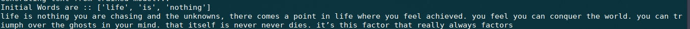
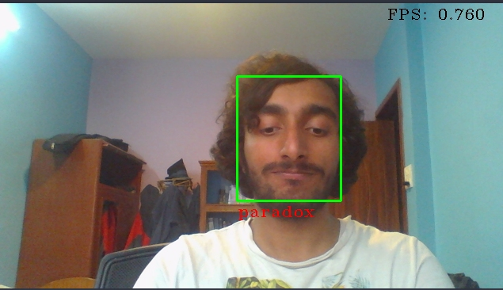
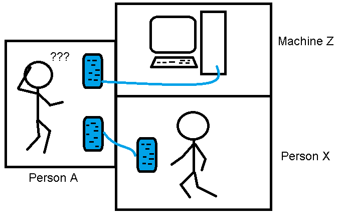
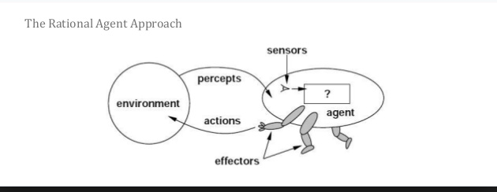
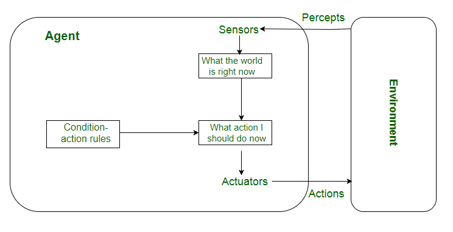
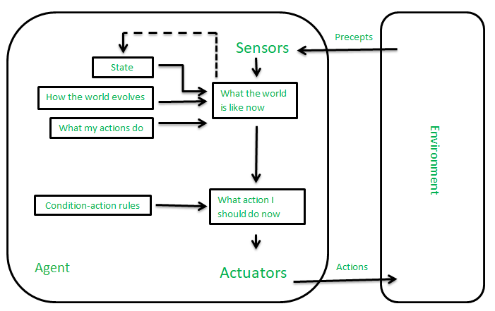
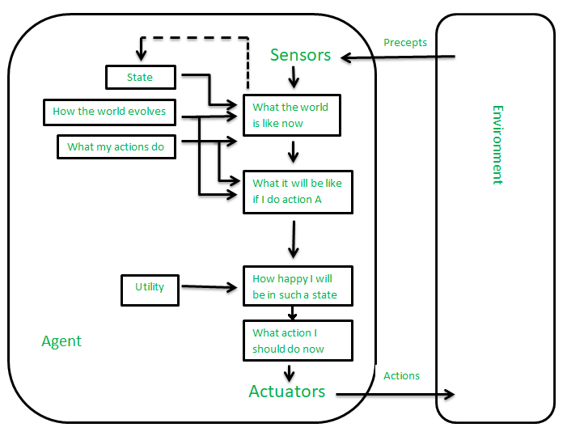
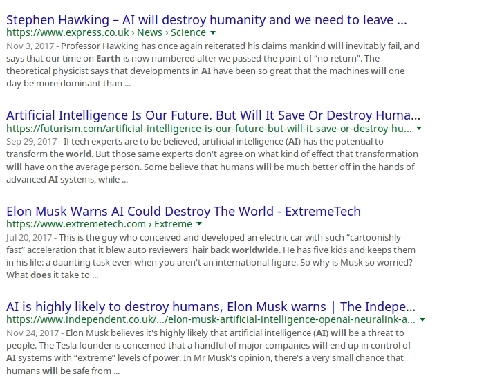
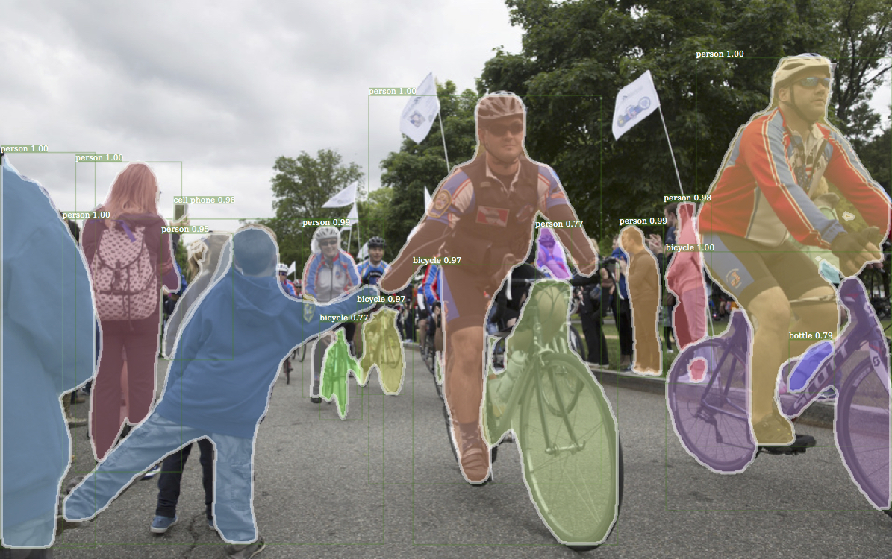
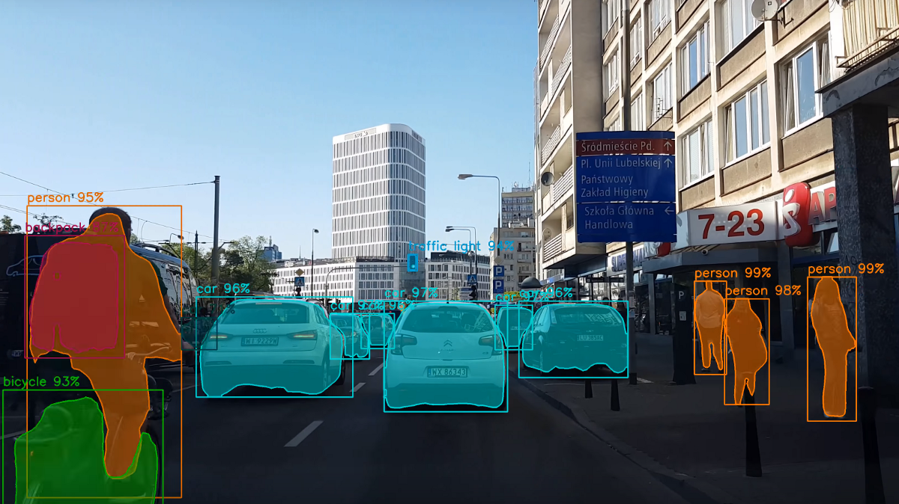

AI
GitHub/ NISH1001
nishanpantha.com.np
nishanpantha@gmail.com
What This Chapter Is About
Definition of AI
Importance of AI
AI and Related Fields
Brief History of AI
Applications of AI
Definition and Importance of Knowledge and Learning
But first...
what is Artificial Intelligence?
Building systems that can do intelligent things
Intelligence is
Perpective
Psychological
Ambiguous
Map
Translate
Alpha Go

Youtube's Recommendation

Facebook's News Feed
Photo Manipulation
Drones
Text Generation
Face Recognition
Other
- Spam Filter in Email
- Google Search
- Weather Prediction
- Games
- Speech Recognition
- Chatbots
- Well...You can list more...
Philosophy (and general) Definitions
Aspects
Thought Process/Reasoning
Behavioural
Thought Process
Thinking Like Human
Thinking Rationally
Behavioural
Acting Humanly
Acting Rationally
Acting Like Human
- NLP
- Knowledge Representation
- Automated Reasoning
The Turing Test Approach
Acting Rationally
The Rational Agent Approach
Acting Rationally
Agent
Environment
Sensors
Stimuli
Actuator
Acting Rationally
Agent
Thinking Humanly
The Cognitive Model Approach
Thinking Humanly
Human Brain
^
||
||
V
Computer System
Thinking Rationally
The "Law of Thought" Approach
Thinking Rationally
- Use of logic and symbols
- Right Thinking?
- Requires Precise Knowledge Representation
- Too many computations
Rational Agents
Agent
Simple Reflex Agent
No History
Model-Based Reflex Agent
Goal-Based Agent

Utility-Based Agent
Importance of AI
AI is everywhere
Catalyst in Decision Making
Related Fields
NLP/NLU
Speech Recognition
QA and bots
Information Retrieval
Semantics Inference
Problem Solving
Heuristic Search
Automatic Program Writing
Inference
Interactive Problem Solving
Visual Perception
Pattern Recognition
Scene Analysis
Object Classification/Localization/Segmentation
Robotics
Exploration
Navigation
Industrial Automation
Military
Games
You know it...
Neuroscience
Economics
Brief History of AI

Applications of AI
Definitions and Importance of Knowlege and Learning
Knowledge
Facts
Knowledge Storing
Symbols
Internal Representation
Knowledge Representation
Mathematical Model
Natural Language
Speech
Image
Importance of Knowledge?
Learning
Changes
Generalization
Improvement
Myths
AI is all about making machines that can think
Not Even Close
AI won’t be bound by human ethics
AI will spin out of control
Autonomous Systems only do good for what they are trained for
AI will be a series of sudden breakthroughs
Slow and Steady
News Media Be Like
News Media Be Like
Artifically Intelligent?
Perhaps, NO
Should We Fear?
No. But Yes in some ways due to social media.
AI has become a misnomer
Where Are We?
Artificial Super Intelligence
Perhaps, Never...
Artificial General Intelligence
Not quite sure we will make it there...
Artificial Narrow Intelligence
Definitely, here...
Reality
Still a baby

Data. Data. Data.

This...
Precise Segmentation
Real Time Object Detection
Baidu’s AI Mimicks Voice
Aid in Tumor Diagnosis
Aid in Surgery
Software 2.0
-Andrej Karpathy
What should we fear?
This?
NO!